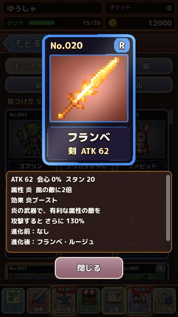

図鑑の楽しみ方
モンスター・武器・盾の図鑑カードの集め方と、カードが光るしくみを紹介します。 更新：2026-11-13
3 つの図鑑
図鑑には、モンスター、武器・盾、必殺技とスキルのページがあります。モンスターは一度たおすと、武器と盾は一度手に入れると、図鑑にカードが追加されます。まだ出会っていないものは「？？？」になっていて、どこまで集めたかがひと目でわかります。

カードが光る
同じモンスターをたくさんたおしたり、同じ武器をたくさん手に入れたりすると、カードのふちが光りはじめます。10・30・50・100 と数が増えるごとに輝きが増していき、100 になると星がきらめく特別なカードになります。お気に入りのモンスターのカードを光らせるのも、やりこみの楽しみのひとつです。
モンスターの曲を聴く
モンスターのカードをタップすると、そのモンスターと戦うときの曲が流れます。ボスごとに専用の曲が用意されているので、図鑑をめくりながら聴き比べてみてください。
進化のつながり
武器と盾のカードには、進化前と進化先の装備も表示されます。まだ手に入れていない進化先は「？？？」で、何に進化するのかを想像しながら素材を集めるのも楽しみです。
図鑑のカードで確かめられること
- モンスター：姿、種族、弱点、たおした数
- 武器：レア度、攻撃力、スキル、効果、進化の前とあと
- 盾：レア度、DEF、HP、スキル、効果
- 必殺技：名前、必要なスキルの組み合わせ
カードをドラッグすると、本物のトレーディングカードのように傾いて光が動きます。SR 以上のカードは特別な光り方をするので、集めたカードをじっくり眺めてみてください。
図鑑をうめるコツ
図鑑の「？？？」になっているモンスターは、まだ行ったことのない STAGE に出てくることがほとんどです。STAGE の「詳細」では、出てくるモンスターのうち図鑑にあるものは姿が、ないものはシルエットが出るので、うめたいモンスターがどこにいるかの手がかりになります。